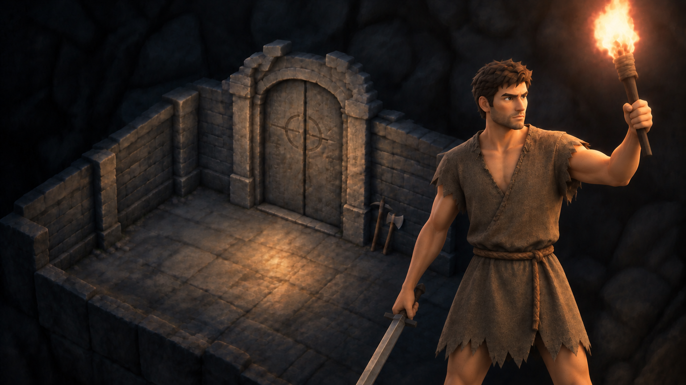

↺ 기억의 정수로 영구 강화 후 1층부터 다시 — 죽을수록 더 높이 오른다.
대담하지만 호의적이지 않다. 데미지가 강한 대신 시작 옷이 하나뿐.
"약한 놈부터 사라지는 거다."
정의롭지만 위험해도 무조건 돕는다. 데미지가 약한 대신 시작 장비가 더 많다.
"굶주렸군요. 이거라도 드세요."
목표 탑을 올라 출구를 찾는다 · 결핍 잃어버린 기억과 자신이 누구인지